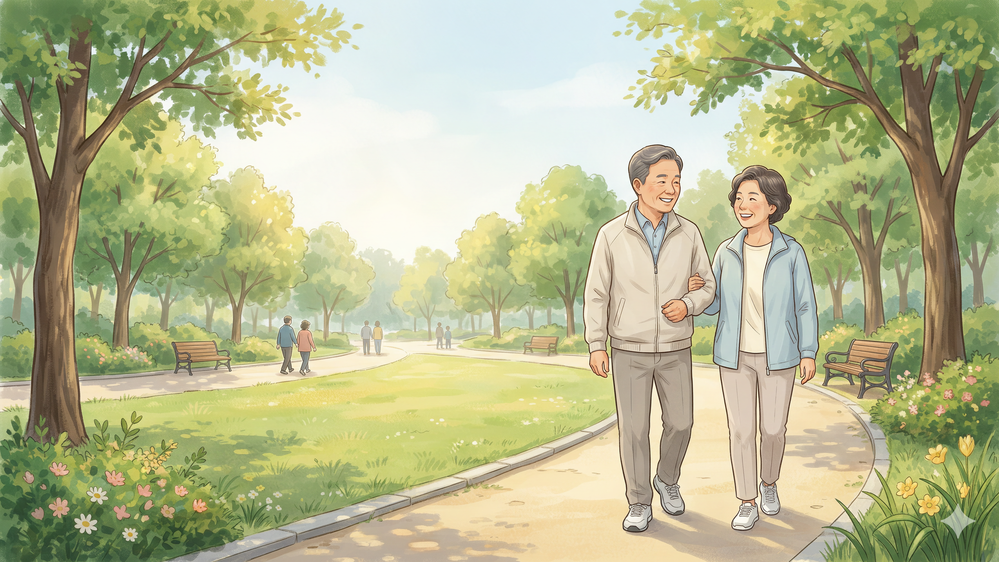
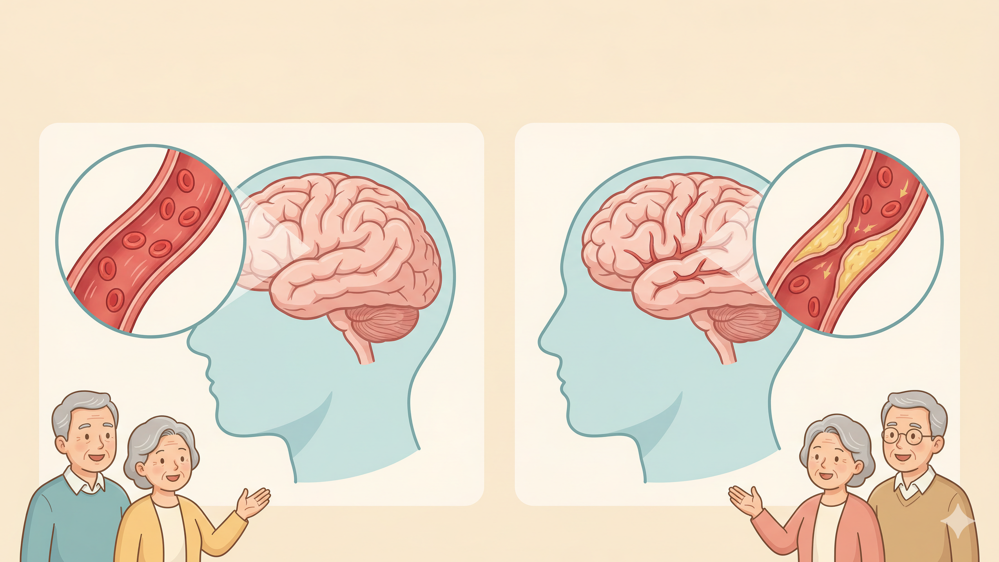
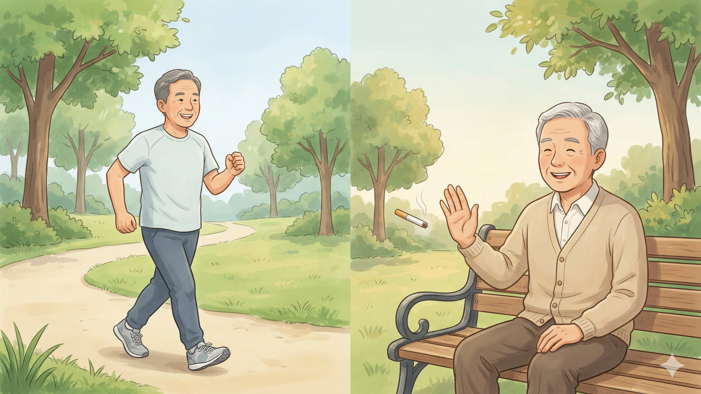
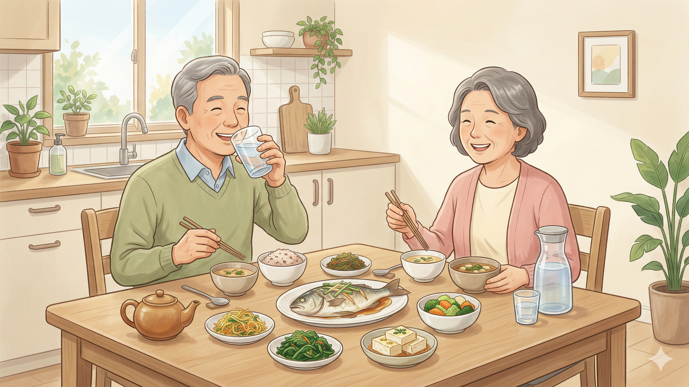
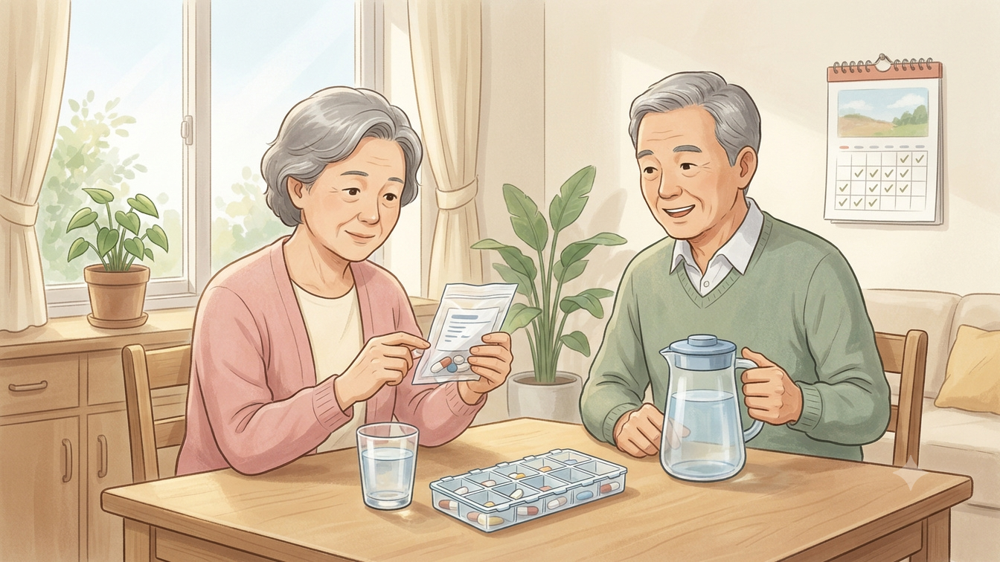

작은 습관이 건강을 지켜요
뇌혈관 건강,
오늘부터 함께
일상에서 시작하는 예방 습관을 쉽고 편안하게 알아봅니다.

건강한 내일을 위한
작은 한 걸음
작은 한 걸음
1 / 3 · 알아보기
뇌혈관질환이란?
뇌혈관이 막히거나 터져 뇌에 혈액과 산소가 제대로 전달되지 않는 질환입니다.

뇌혈관의 흐름을
그림으로 확인해 보세요.
그림으로 확인해 보세요.
갑작스러운 한쪽 마비, 말이 어눌해짐, 시야 이상이 나타나면 즉시 119에 연락하세요.
오늘의 한 줄 실천
뇌 건강 = 혈관 건강을 꾸준히 살피기화면이 열리면 자동 재생되며, 끝나면 다음 내용으로 이동합니다.
2 / 3 · 생활습관
움직이고, 담배는 멀리
걷기처럼 지속할 수 있는 신체활동을 생활에 더하고, 담배는 피우지 않는 방향으로 실천해 보세요.

걷기와 금연처럼
실천 가능한 습관부터 시작해요.
실천 가능한 습관부터 시작해요.
가능한 범위에서 하루 30분 이상 걷기 등 규칙적으로 움직여 보세요. 몸 상태나 기존 질환에 맞는 운동은 의료진과 상담하세요.
오늘의 한 줄 실천
매일의 걷기 + 금연 = 혈관을 위한 선택화면이 열리면 자동 재생되며, 끝나면 다음 내용으로 이동합니다.
3 / 3 · 식습관과 복약
식탁과 복약 습관 살피기
싱겁게 먹고 채소와 생선을 충분히 챙기며, 처방받은 약은 의료진의 안내에 따라 복용하세요.

채소와 생선을
골고루 담은 식사
골고루 담은 식사

약은 처방과 안내에
맞춰 복용하기
맞춰 복용하기
술은 피하고, 국물·절임 음식 등 짠 음식은 줄여 보세요. 약을 임의로 중단하거나 양을 바꾸지 말고 궁금한 점은 의료진이나 약사에게 확인하세요.
오늘의 한 줄 실천
싱겁게 먹기 + 처방대로 복용하기화면이 열리면 자동 재생되며, 끝나면 퀴즈로 이동합니다.
직접 해보기
배운 내용을 확인해요
두 문제를 모두 고른 뒤 채점 버튼을 눌러 주세요. 이 화면에서는 자동으로 넘어가지 않습니다.
마무리
오늘 배운 세 가지
- 걷기 등 규칙적인 신체활동과 금연을 실천해요.
- 술을 피하고, 싱겁게 먹으며 채소와 생선을 챙겨요.
- 처방약은 의료진의 안내대로 복용해요.
이번 주에 해볼 한 가지를 골라보세요
갑작스러운 마비, 말하기 어려움 등 응급 증상이 있으면 즉시 119에 연락하세요. 이 페이지는 일반적인 건강 정보이며 개인 진료를 대신하지 않습니다.
이 작품에 대하여
제작 [백지우] · 2026 「AI와 디지털 아츠」 과제
글/구성 사람 기획, 문장은 AI 초안 후 직접 수정
그림 이미지 생성 AI(제미나이)로 생성, 프롬프트 직접 작성
음성 내레이션 TTS(Suno)
코드 웹 뷰어는 바이브 코딩(ChatGPT) 보조, 직접 점검
AI 활용 고지: 그림·음성·코드 생성에 생성형 AI를 사용했습니다.
콘텐츠는 누구나 자유롭게 사용할 수 있습니다.